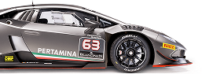
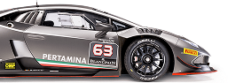

LAMBORGHINI SUPER TROFEO
Гранд-финал 2022
3-6 ноября
автодром Портимао,Португалия
Гранд-финал 2022
3-6 ноября
автодром Портимао,Португалия

Мировой финал Lamborghini завершает каждый сезон Super Trofeo с 2013 года. Каждый год гонщики всех континентальных чемпионатов отправляются на разные трассы и принимают участие в двух 50-минутных спринтерских гонках, где определяется победитель в общем зачете. как чемпион мира Lamborghini. Мировой финал Lamborghini — это не только крупнейший гоночный уик-энд года, но и настоящий фестиваль автоспорта, который привлекает поклонников со всего мира.
Парад владельцев, превью и развлечения в паддоке для болельщиков — это лишь некоторые из мероприятий, организованных в рамках мероприятия.
Все автомобили, которые участвуют в чемпионатах Lamborghini Super Trofeo, управляются частными командами, которые используют свой опыт для тонкой настройки их для водителей. Для каждого континентального чемпионата Lamborghini Super Trofeo существуют рейтинги пилотов и команд.
Пилоты и команды, участвующие в континентальной серии, каждый год соревнуются друг с другом в Гранд Финале Lamborghini, мероприятии, которое завершает спортивный сезон Super Trofeo. Две квалификационные сессии и две гонки определяют чемпионов мира серии. Каждый год Гранд-финал проводится на разных трассах, и в прошлых выпусках он уже затрагивал европейский, азиатский и американский континенты.
14 в истории серии GT, посвященный автомобилям Lamborghini Huracan Super Trofeo Evo. Шесть этапов, в общей сложности 12 гонок и 600 минут соревнований будут разыграны на некоторых из самых престижных трасс Европы.
Autodromo Internacional do Algarve находится в одноименном регионе на юге Португалии, недалеко от города Портиман. Открытый в октябре 2008 года автогоночный комплекс является одним из самых современных в Европе, раскинувшись на площади около 300 гектаров среди холмов, окружающих португальский город, а длина самой трассы составляет 4684 метра.

Новый Huracán Super Trofeo EVO достигает еще больших высот, чем его прославленный предшественник, благодаря полностью переработанной аэродинамике. Huracán Super Trofeo EVO является идеальной стартовой площадкой для всех водителей, которые хотят начать карьеру в гонках класса GT.
Huracán EVO — это эволюция самого успешного Lamborghini с двигателем V10. В результате тонкой настройки и усовершенствования существующих функций в сочетании с новыми конструктивными решениями, повышающими производительность, автомобиль выделяется своей способностью предугадывать и удовлетворять поведение, ожидания и желания водителя.


ПЕРЕМЕЩЕНИЕ 5204 см³
КРУТЯЩИЙ МОМЕНТ 570 Нм при 6500 об/мин
МОЩНОСТЬ (л.с.) / МОЩНОСТЬ (КВТ) 620 л.с. при 8250 об/мин
МАКС. СКОРОСТЬ 325 км /ч
0-100 КМ/Ч 2,9 с
Его неповторимый дизайн — это естественная эволюция культовых линий Huracán, включающая новые сложные решения, поднимающие производительность и вызывающие эмоции на невиданный ранее уровень.
Беспрецедентный обвес был разработан инженерами отдела автоспорта Automobili Lamborghini в сотрудничестве с Dallara Engineering и Lamborghini Centro Stile. Последний также разработал стартовую ливрею для автомобиля в честь партнерства между Lamborghini Squadra Corse и Roger Dubuis, которое началось в 2018 году.
Среди наиболее очевидных изменений в обвесе Lamborghini Huracan Super Trofeo EVO — задний спойлер на заднем капоте и верхний воздухозаборник, которые делают его мгновенно узнаваемым для зрителей.
 


 смотреть онлайн
смотреть онлайн


Нельсон Пике-младший из Ansa Motorsports обеспечил возвращение титула Lamborghini Super Trofeo Grand Finals в Северную Америку впервые с 2017 года после победы и второе место в паре 50-минутных гонок на Autodromo Nacionale do Algarve в Портимане.Между тем, титул Pro-Am был подорван, поскольку Брайан Ортис и Себастьян Карасо из...

Утренний дождь означал, что мокрая гонка была объявлена до старта, и перед большинством экипажей стоял выбор: использовать слики или мокрые шины. Большинство участников предпочли мокрую трассу, но поулист Спинелли начал гонку на сликах и сразу же поплатился за это. Huracan № 61 опустился вниз, заняв всего 28-е место, поскольку..
Бондуэль опередил бегунов Pro-Am Кароля Баша (Micanek Motorsport) и Льюиса Уильямсона (Oregon Team).Вскоре Уильямсон опередил Баса, заняв первое место в Pro-Am и заняв второе место в общем зачете, но гонщик команды Орегона не был доволен тем, что остался на этом месте, поскольку он отнимал у Бондюэля часть времени впереди. Вскоре Уильямсон оказался позади Бондюэля и сделал решающий рывок на восьмом повороте, чтобы захватить лидерство на седьмом круге. Таков был темп машины под номером 27, Уильямсон построил трехсекундный отрыв и удерживал лидерство до пит-стопов.Бондуэль, который боролся с высоким давлением в шинах на первом отрезке, перешел на слики на пит-стопах и снова вышел в лидеры после того, как обогнал Бромека Форманека, в то время как автомобиль Target Racing из Milan Teekens оспаривал третье место с машиной Iron Dames. Дориан Пин. Пин № 83 поднялся на второе место перед Тикенсом после остановок, но в конце гонки попал под давление со стороны Тикенса. Teekens обогнал Пина на последних кругах и финишировал вторым после вращения Форманека за два круга до финиша, в то время как Пин также развернулся на последнем круге и занял пятое место в общем зачете.Получив прибыль от вращения Форманека, Сиглия и Уильямсон финишировали третьими в общем зачете и первыми в Pro-Am, завоевав титул на гонку раньше. Бенуа Семулен и Франсуа Семулен выиграли в классе Lamborghini Cup, опередив Ван дер Хорста и Ханса Фабри, а Левандовски одержал победу в классе Am.
Анджей Левандовски
«Я очень доволен титулом, моей второй победой в Am и четвертой в Super Trofeo, мне очень приятно делать это в этом году, потому что уровень соревнований очень высок. Должен сказать, сегодня было довольно легко, так как я все время контролировал ситуацию».
Жерар ван дер Хорст
«Я очень доволен титулом, моей второй победой в Am и четвертой в Super Trofeo, мне очень приятно делать это в этом году, потому что уровень соревнований очень высок. Должен Обладатель кубка Lamborghini добавил: «Здорово выиграть титул, спустя четыре года после последнего,...
а за это время произошло так много всего. Из-за COVID-19, а затем моей тяжелой аварии в Барселоне я не мог так много ездить в последние годы, поэтому я очень доволен своим возвращением. Сегодня утром была тяжелая гонка, но я справился». сказать, сегодня было довольно легко, так как я все время контролировал ситуацию».